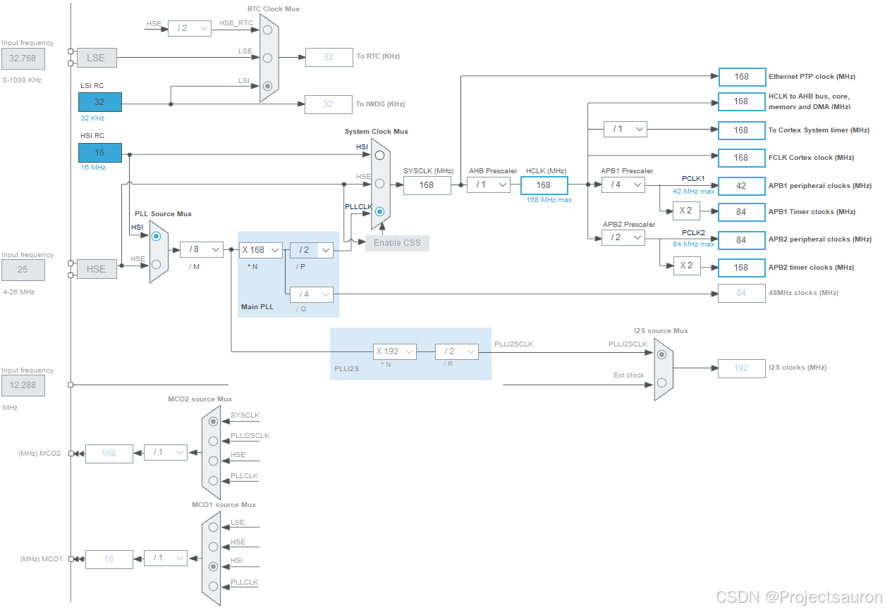
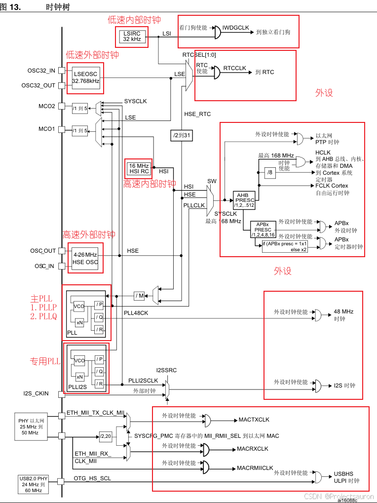
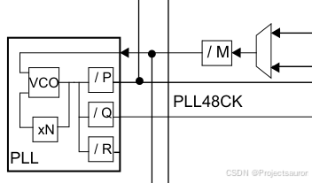
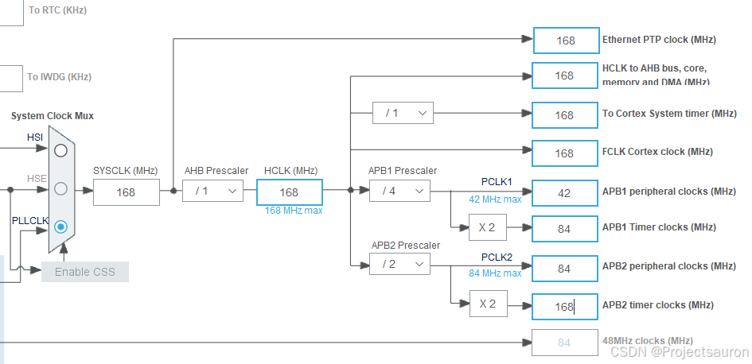
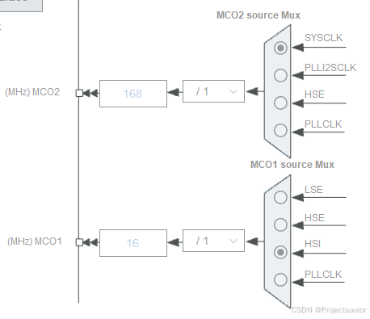
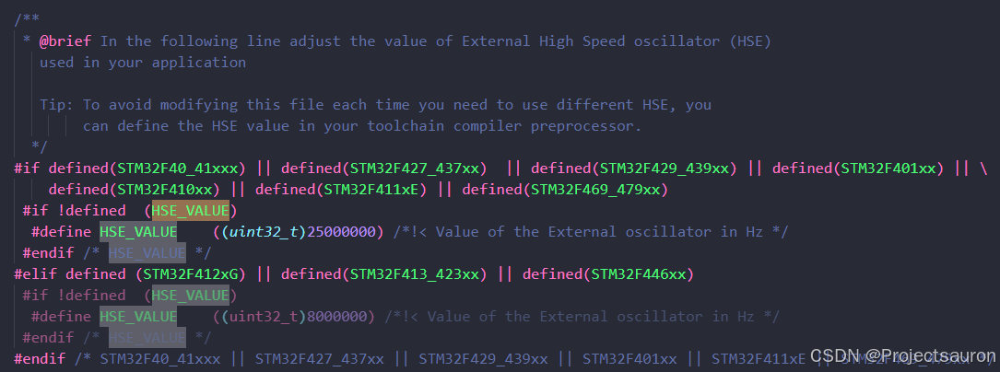
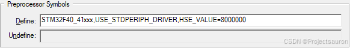
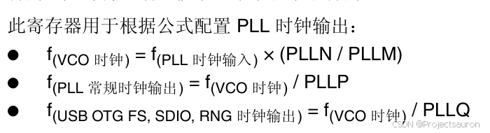

STM32 时钟树（基于 STM32F407）
[toc]
一、概述
STM32 内部也是由多种多样的电路模块组合在一起实现的。当一个电路越复杂，在达到正确的输出结果前，它可能因为延时会有一些短暂的中间状态，而这些中间状态有时会导致输出结果会有一个短暂的错误，这叫做电路中的“毛刺现象”，如果电路需要运行得足够快，那么这些错误状态会被其它电路作为输入采样，最终形成一系列的系统错误。为了解决这个问题，在单片机系统中，设计时以时序电路控制替代纯粹的组合电路，在每一级输出结果前对各个信号进行采样，从而使得电路中某些信号即使出现延时也可以保证各个信号的同步，可以避免电路中发生的“毛刺现象”，达到精确控制输出的效果。
由于时序电路的重要性，因此在 MCU 设计时就设计了专门用于控制时序的电路，在芯片设计中称为时钟树设计。由此设计出来的时钟，可以精确控制我们的单片机系统。对于STM32F4 系列的芯片，正常工作的主频可以达到 168Mhz，但并不是所有外设都需要系统时钟这么高的频率，比如看门狗以及 RTC 只需要几十 Khz 的时钟即可。同一个电路，时钟越快功耗越大，同时抗电磁干扰能力也会越弱，所以对于较为复杂的 MCU 一般都是采取多时钟源的方法来解决这些问题。
STM32 本身非常复杂，外设非常的多，为了保持低功耗工作，STM32 的主控默认不开启这些外设功能。用户可以根据自己的需要决定STM32 芯片要使用的功能，这个功能开关在 STM32 主控中也就是各个外设的时钟。

二、时钟树框图
下图选自 STM32F4xx 参考手册：

下面来详细讨论上图中红框中的内容。
1、时钟源
对于 STM32F4，输入时钟源主要包括 HSI，HSE，LSI，LSE。其中，从时钟频率来分可以分为高速时钟源和低速时钟源，其中 HSI、HSE 是高速时钟，LSI 和 LSE 是低速时钟。从来源可分为外部时钟源和内部时钟源，外部时钟源就是从外部通过接晶振的方式获取时钟源，其中 HSE 和 LSE 是外部时钟源；其他是内部时钟源，芯片上电即可产生，不需要借助外部电路。
- 高速外部振荡器 HSE (High Speed External Clock signal)：外接石英/陶瓷谐振器，频率为 4MHz~26MHz。
HSE也可以直接做为系统时钟或者 PLL 输入。 - 低速外部振荡器 LSE (Low Speed External Clock signal)：外接 32.768kHz 石英晶体，主要作用于 RTC 的时钟源。
两个外部时钟源都是芯片外部晶振产生的时钟频率，故而都有精度高的优点
- 高速内部振荡器 HSI(
High Speed Internal Clock signal)：由内部 RC 振荡器产生，频率为 16MHz。 - 低速内部振荡器 LSI(
Low Speed Internal Clock signal)：由内部 RC 振荡器产生，频率为 32kHz，可作为独立看门狗和自动唤醒单元的时钟源。
芯片上电时默认由内部的 HSI 时钟启动，如果用户进行了硬件和软件的配置，芯片才会根据用户配置调试尝试切换到对应的外部时钟源
2、锁相环
锁相环是自动控制系统中常用的一个反馈电路，在 STM32 主控中，锁相环的作用主要有两个部分：输入时钟净化和倍频。前者是利用锁相环电路的反馈机制实现，后者我们用于使芯片在更高且频率稳定的时钟下工作。
如框图所示，STM32F4 有两个 PLL:
- 主 PLL(
PLL)由HSE或者HSI提供时钟信号，并具有两个不同的输出时钟。- 第一个输出
PLLP用于生成高速的系统时钟（最高 168MHz） - 第二个输出
PLLQ用于生成 USB OTG FS 的时钟（48MHz），随机数发生器的时钟和 SDIO 时钟。
- 第一个输出
- 专用 PLL(
PLLI2S)用于生成精确时钟，从而在I2S接口实现高品质音频性能。
这里我们着重看看主PLL时钟第一个高速时钟输出PLLP的计算方法。如图：

主 PLL 时钟的时钟源要先经过一个分频系数为 M 的分频器，然后经过倍频系数为 N 的倍频器出来之后的时候还需要经过一个分频系数为 P（第一个输出 PLLP）或者 Q（第二个输出 PLLQ）的分频器分频之后，最后才生成最终的主 PLL 时钟。
例如我们的外部晶振选择 8MHz。同时我们设置相应的分频器 M=8，倍频器倍频系数 N=336，分频器分频系数 P=2，那么主 PLL 生成的第一个输出高速时钟 PLLP 为：
$$
PLL=8MHz* N/ (MP)=8MHz 336 /(8*2) = 168MHz
$$
如果我们选择 HSE 为 PLL 时钟源，同时 SYSCLK 时钟源为 PLL，那么 SYSCLK 时钟为 168MHz。
3、系统时钟
STM32 的系统时钟 SYSCLK 为整个芯片提供了时序信号。
讲解 PLL 作为系统时钟时，讲到了如何把主频通过 PLL 设置为 168MHz。从上面的时钟树图可知，AHB、APB1、APB2、内核时钟等时钟通过系统时钟分频得到。根据得到的这个系统时钟，下面我们结合外设来看一看各个外设时钟源。
下面结合 STM32CubeMX 的时钟树来看：

可以看到，系统时钟输入源可选时钟信号有外部高速时钟 HSE(8M)、内部高速时钟 HSI(16M)和经过倍频的 PLL CLK(168M)。这里选择 PLL CLK 作为系统时钟，此时系统时钟的频率为 168MHz。
然后是 AHB 预分频器，其中可选择的分频系数为1，2，4，8，16，32，64，128，256，512，我们选择不分频，所以 AHB 总线时钟达到最大的 168MHz。
然后看由 AHB 总线时钟得到的时钟：
- APB1 总线时钟，由 HCLK 经过 APB1 预分频器得到，分频因子可以选择1，2，4，8，16，这里我们选择的是 4 分频，所以 APB1 总线时钟为 42M。由于 APB1 是低速总线时钟，APB1 总线最高频率为 42MHz，片上低速的外设就挂载在该总线上，例如有看门狗定时器、定时器 2/3/4/5/6/7、RTC 时钟、USART2/3/4/5、SPI2(I2S2) 与 SPI3(I2S3)、I2C1~3、CAN 和 2 个DAC。
- APB2 总线时钟，由 HCLK 经过标号 APB2 预分频器得到，分频因子可以选择1，2，4，8，16，这里我们选择的是 2 分频，所以APB2 总线时钟频率为 84M。与 APB2 高速总线连接的外设有定时器 1/8/9/10/11、SPI1、USART1 和 USART6、3 个 ADC 和 SDIO 接口。
- AHB 总线时钟 直接作为 GPIO(A\B\C\D\E\F\G\H\I)、以太网、DCMI、FSMC、AHB 总线、Cortex 内核、存储器和 DMA 的 HCLK 时钟，并作为 Cortex 内核自由运行时钟 FCLK。
4、时钟信号输出 MCO

MCO 时钟输出的作用是为外部器件提供时钟。STM32 允许通过设置，通过 MCO 引脚输出一个稳定的时钟信号。
从右向左依次为：
- MCO1\MCO2 时钟源选择器
- MCO1（外部器件的输出时钟1）时钟源有四个：LSE、HSE、HSI 和 PLLCLK。
- MCO2（外部器件的输出时钟2）时钟源有四个：SYSCLK、PLLI2SCLK、HSE 和 PLLCLK。
- MCO1\MCO2 时钟分频器：MCO1 和 MCO2 的预分频器，取值范围均为：1 到 5。
- MCO1\MCO2 时钟输出引脚：MCO1、MCO2 两个时钟输出引脚给外部器件提供时钟源（分别由 PA8 和 PC9 复用功能
实现），每个引脚可以选择一个时钟源，通过 RCC 时钟配置寄存器 (RCC_CFGR)进行配置。
对于不同的 MCO 引脚，必须将相应的 GPIO 端口在复用功能模式下进行设置。MCO 输出时钟不得超过 100 MHz（最大 I/O 速度）
三、时钟配置
STM32F407 默认的情况下（比如：串口 IAP 时或者是未初始化时钟时），使用的是内部 8M 的 HSI 作为时钟源，所以不需要外部晶振也可以下载和运行代码的。
下面就来讲解如何让 STM32F407 芯片在 168MHz 的频率下工作，168MHz 是官方推荐使用的最高的稳定时钟频率。
1、修改主频
1.1 配置 HSE_VALUE
在文件 stm32f4xx.h 有如下内容：

宏定义 HSE_VALUE 匹配我们实际硬件的高速晶振频率（我的板子是 8MHz），代码中通过使用宏定义的方式来选择 HSE_VALUE 的值是 25M 或者 8M。
或者直接在 Keil 中添加宏定义也可以：

1.2 调用 SystemInit 函数
在 STM32 芯片启动过程 一文中我提到过 SystemInit 函数。该函数定义在文件 system_stm32f4xx.c 中，源码如下：
1 | |
最主要的工作都是在函数 SetSysClock 里进行的，它进行了系统时钟源配置和各个分频器的设置。精简后如下（STM32F40_41xxx）：
1 | |
单独说一下这段：
1 | |
对于 RCC_PLLCFGR 寄存器，官方文档说明如下：

而代码中的各个宏的值如下：
1 | |
算出来这里的 RCC->PLLCFGR 的结果为：$0740 5408$，设置结果为：
- PLLQ = 3
- 选择 HSE 振荡器时钟作为 PLL 和 PLLI2S 时钟输入
- PLLP = 2
- PLLN = 336
- PLLM = 8
时钟配置相关的内容就告一段落了。
2、STM32F4 时钟使能和配置
在配置好时钟系统之后，如果我们要使用某些外设，例如 GPIO，ADC 等，我们还要使能这些外设时钟。这里需要注意，如果在使用外设之前没有使能外设时钟，这个外设是不可能正常运行的。STM32 的外设时钟使能是在 RCC 相关寄存器中配置的。
下面以 AHB1 总线上的外设的时钟使能函数为例：
1 | |
如果我们想用 GPIOA，就用如下语句来使能其时钟：
1 | |
其它总线类似：
1 | |
时钟源使能函数共有六个：
1 | |